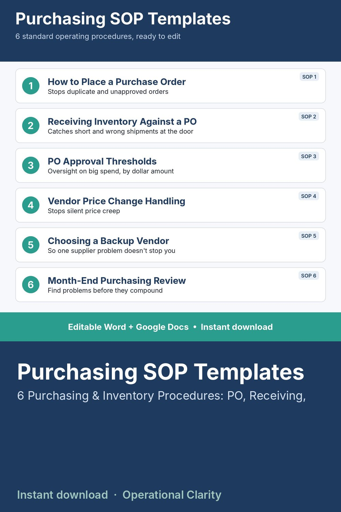

Purchasing SOP Templates

6 editable purchasing and inventory SOPs (standard operating procedures) for small business: placing purchase orders, receiving procedures, approval thresholds, vendor price changes, backup vendors and month-end review.
STOP REINVENTING YOUR PURCHASING PROCESS EVERY TIME SOMETHING GOES WRONG.
Six ready-to-use standard operating procedures covering the situations that actually cause purchasing headaches: duplicate orders, short shipments, no oversight on big spend, silent price creep, no backup vendor, and problems nobody catches until month-end.
WHAT'S INCLUDED - 6 FULL SOPs
1. How to Place a Purchase Order
2. Receiving Inventory Against a PO
3. Purchase Order Approval Thresholds
4. Vendor Price Change Handling
5. Choosing a Backup Vendor
6. Month-End Purchasing Review
Each SOP includes: Purpose, When to Use It, Step-by-Step Instructions, and the Specific Mistake It Prevents - so your team understands WHY, not just what.
FORMATS INCLUDED
- Word file (.docx) - fully editable
- Google Docs version - just make your own copy
- Every SOP has bracketed [placeholders] for your own thresholds, names, and timelines
WHO THIS IS FOR
Small business owners and operations managers who need real, usable purchasing procedures now, not a blank template to build from scratch.
INSTANT DOWNLOAD - no physical item will be shipped. Because this is a digital product, all sales are final.